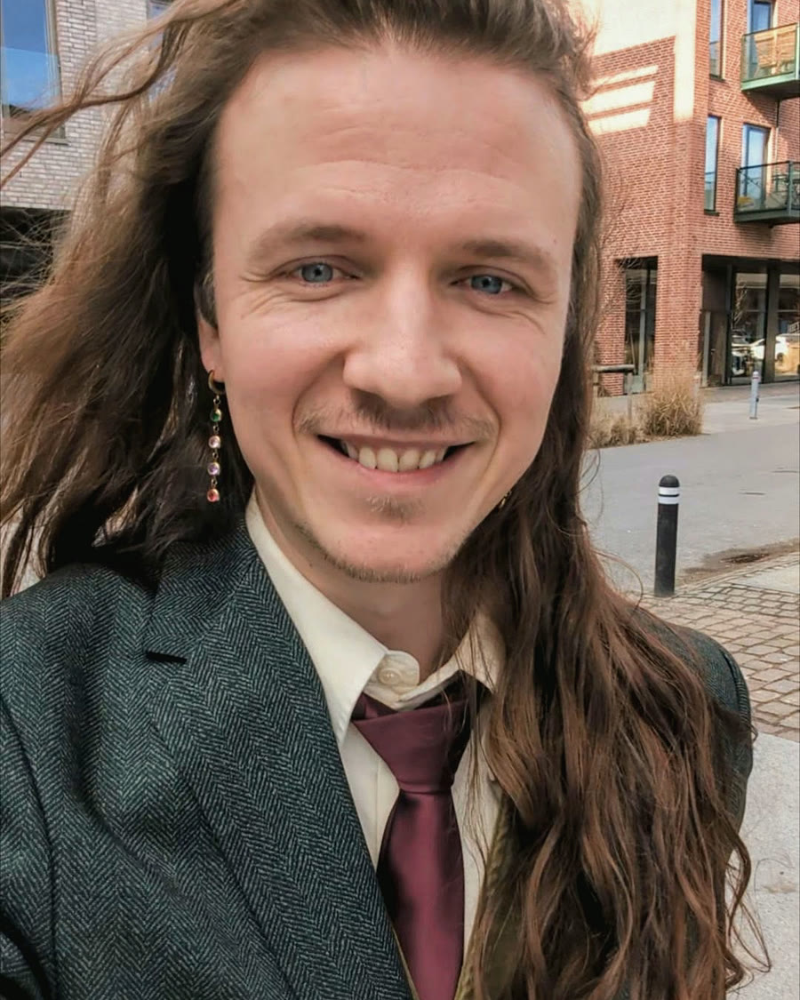
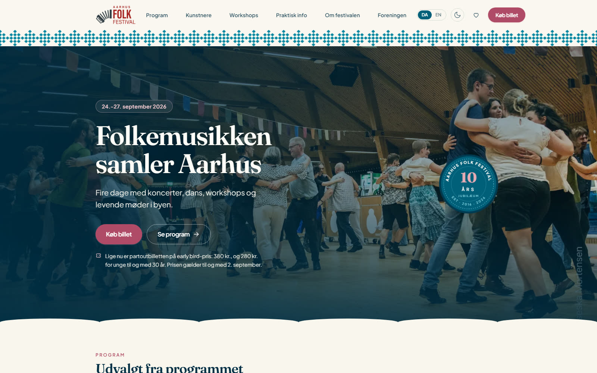
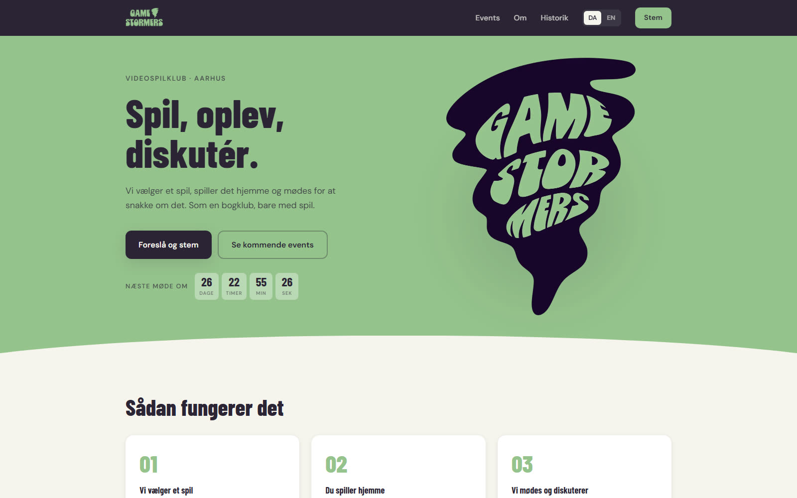
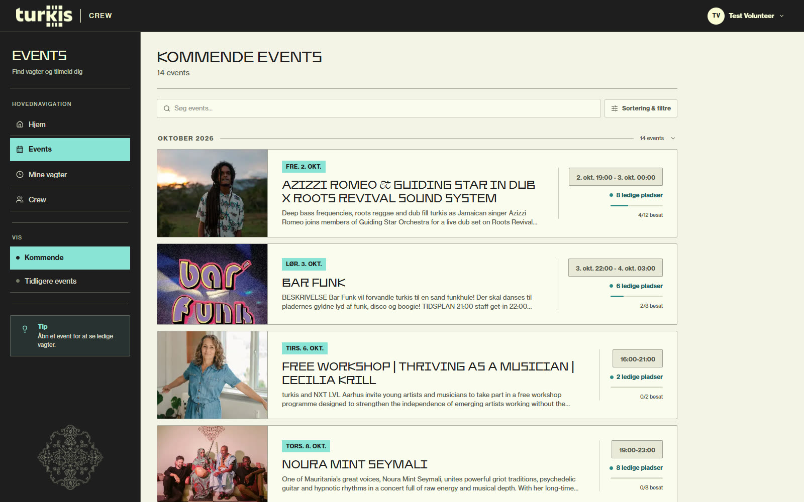
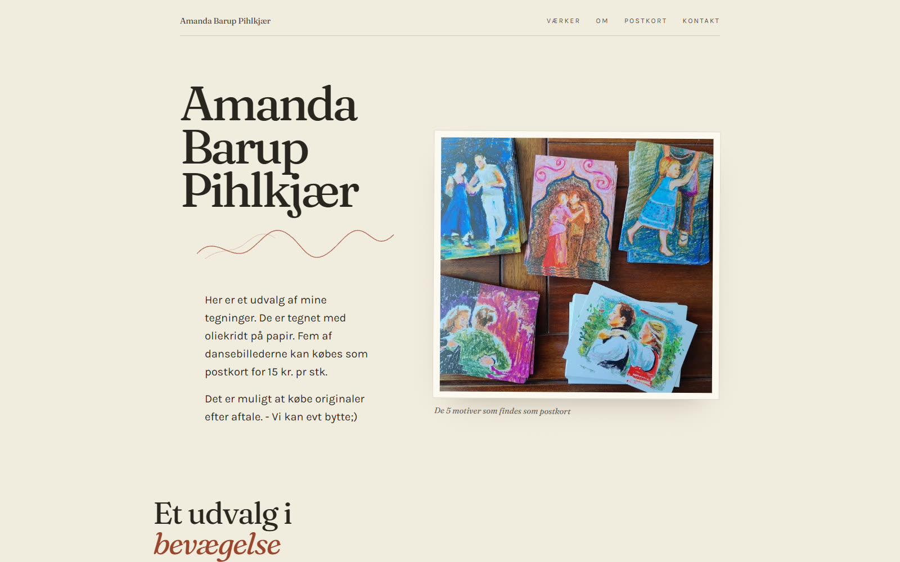

Hej, jeg er Kasper.
Jeg bygger websites, værktøjer og fællesskaber. Aarhus.

Bygger
Websites, værktøjer og systemer.
Samler
Klubber, festivaler og frivillige.
Hjælper
Gratis arbejde for mennesker, der har brug for det.
Udvalgt arbejde

Aarhus Folk Festival
Fire dage med koncerter, dans og workshops. Jeg bygger og vedligeholder festivalens website.

Aarhus Gamestormers
En videospilklub, der fungerer som en bogklub. Jeg startede den; 29 kommer til møderne, og 129 er med på Discord.

turkis Crew
Jeg har bygget og driver platformen, som spillestedet turkis i Aarhus nu bruger til vagter, events og frivilliginformation. Jeg er selv frivillig backstage på huset.

Amanda Barup Pihlkjær
En portfolio for en illustrator med et studie, hun selv kan opdatere. Postkort bestilles direkte på mail.
Café Hygge, en pixelcafé til læsning.
Har du en idé, der er værd at bygge?
Driver du et lille kulturprojekt, en forening eller laver du kunst, og mangler du et ordentligt website? Skriv. Nogle gange gør jeg det gratis.
Skriv om dit projektJeg er trafikleder og bygger videre, når jeg har fri.
På arbejde lægger jeg de operative planer for Aarhus Letbane og afgør, hvornår dele af kørestrømmen er sikre at arbejde på. Ved siden af bygger jeg websites, driver en spilklub og er frivillig på et spillested og en folkefestival.
- 2022
Trafikleder og koblingsleder, Aarhus Letbane
- 2025
Frivillig: turkis, folkefestival og spilklub
- 2018–21
Kandidat i Videnskabsstudier
- 2016–18
Bachelor i Filosofi
- 2008–10
Webintegrator
Skriv til mig.
kasper@kasper-krog.dkDansk eller engelsk. En løs idé er helt fin.